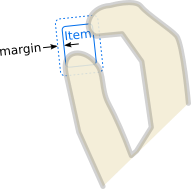

MultiPointHandler QML Type
Abstract handler for multi-point Pointer Events. More...
| Import Statement: | import QtQuick 2.15 |
| Since: | Qt 5.10 |
| Inherits: | |
| Inherited By: |
Properties
- acceptedButtons : flags
- acceptedDevices : flags
- acceptedModifiers : flags
- acceptedPointerTypes : flags
- active : bool
- centroid : QtQuick::HandlerPoint
- cursorShape : Qt::CursorShape
- dragThreshold : int
- enabled : bool
- grabPermissions : flags
- margin : real
- maximumPointCount : int
- minimumPointCount : int
- parent : Item
- target : Item
Signals
- canceled(point)
- grabChanged(transition, EventPoint point)
Detailed Description
An intermediate class (not registered as a QML type) for any type of handler which requires and acts upon a specific number of multiple touchpoints.
Property Documentation
The mouse buttons which can activate this Pointer Handler.
By default, this property is set to Qt.LeftButton. It can be set to an OR combination of mouse buttons, and will ignore events from other buttons.
For example, a control could be made to respond to left and right clicks in different ways, with two handlers:
Item { TapHandler { onTapped: console.log("left clicked") } TapHandler { acceptedButtons: Qt.RightButton onTapped: console.log("right clicked") } }
Note: Tapping on a touchscreen or tapping the stylus on a graphics tablet emulates clicking the left mouse button. This behavior can be altered via acceptedDevices or acceptedPointerTypes.
The types of pointing devices that can activate this Pointer Handler.
By default, this property is set to PointerDevice.AllDevices. If you set it to an OR combination of device types, it will ignore events from non-matching devices.
For example, a control could be made to respond to mouse and stylus clicks in one way, and touchscreen taps in another way, with two handlers:
Item { TapHandler { acceptedDevices: PointerDevice.Mouse | PointerDevice.Stylus onTapped: console.log("clicked") } TapHandler { acceptedDevices: PointerDevice.TouchScreen onTapped: console.log("tapped") } }
If this property is set, it will require the given keyboard modifiers to be pressed in order to react to pointer events, and otherwise ignore them.
If this property is set to Qt.KeyboardModifierMask (the default value), then the PointerHandler ignores the modifier keys.
For example, an Item could have two handlers of the same type, one of which is enabled only if the required keyboard modifiers are pressed:
Item { TapHandler { acceptedModifiers: Qt.ControlModifier onTapped: console.log("control-tapped") } TapHandler { acceptedModifiers: Qt.NoModifier onTapped: console.log("tapped") } }
If you set acceptedModifiers to an OR combination of modifier keys, it means all of those modifiers must be pressed to activate the handler:
Item { TapHandler { acceptedModifiers: Qt.ControlModifier | Qt.AltModifier | Qt.ShiftModifier onTapped: console.log("control-alt-shift-tapped") } }
The available modifiers are as follows:
| Constant | Description |
|---|---|
NoModifier | No modifier key is allowed. |
ShiftModifier | A Shift key on the keyboard must be pressed. |
ControlModifier | A Ctrl key on the keyboard must be pressed. |
AltModifier | An Alt key on the keyboard must be pressed. |
MetaModifier | A Meta key on the keyboard must be pressed. |
KeypadModifier | A keypad button must be pressed. |
GroupSwitchModifier | X11 only (unless activated on Windows by a command line argument). A Mode_switch key on the keyboard must be pressed. |
KeyboardModifierMask | The handler does not care which modifiers are pressed. |
If you need even more complex behavior than can be achieved with combinations of multiple handlers with multiple modifier flags, you can check the modifiers in JavaScript code:
Item { TapHandler { onTapped: switch (point.modifiers) { case Qt.ControlModifier | Qt.AltModifier: console.log("CTRL+ALT"); break; case Qt.ControlModifier | Qt.AltModifier | Qt.MetaModifier: console.log("CTRL+META+ALT"); break; default: console.log("other modifiers", point.modifiers); break; } } }
See also Qt::KeyboardModifier.
The types of pointing instruments (finger, stylus, eraser, etc.) that can activate this Pointer Handler.
By default, this property is set to PointerDevice.AllPointerTypes. If you set it to an OR combination of device types, it will ignore events from non-matching events.
For example, a control could be made to respond to mouse, touch, and stylus clicks in some way, but delete itself if tapped with an eraser tool on a graphics tablet, with two handlers:
Rectangle { id: rect TapHandler { acceptedPointerTypes: PointerDevice.GenericPointer | PointerDevice.Finger | PointerDevice.Pen onTapped: console.log("clicked") } TapHandler { acceptedPointerTypes: PointerDevice.Eraser onTapped: rect.destroy() } }
[read-only] active : bool |
This holds true whenever this Input Handler has taken sole responsibility for handing one or more EventPoints, by successfully taking an exclusive grab of those points. This means that it is keeping its properties up-to-date according to the movements of those Event Points and actively manipulating its target (if any).
[read-only] centroid : QtQuick::HandlerPoint |
A point exactly in the middle of the currently-pressed touch points. If only one point is pressed, it's the same as that point. A handler that has a target will normally transform it relative to this point.
This property holds the cursor shape that will appear whenever the mouse is hovering over the parentItem while active is true.
The available cursor shapes are:
- Qt.ArrowCursor
- Qt.UpArrowCursor
- Qt.CrossCursor
- Qt.WaitCursor
- Qt.IBeamCursor
- Qt.SizeVerCursor
- Qt.SizeHorCursor
- Qt.SizeBDiagCursor
- Qt.SizeFDiagCursor
- Qt.SizeAllCursor
- Qt.BlankCursor
- Qt.SplitVCursor
- Qt.SplitHCursor
- Qt.PointingHandCursor
- Qt.ForbiddenCursor
- Qt.WhatsThisCursor
- Qt.BusyCursor
- Qt.OpenHandCursor
- Qt.ClosedHandCursor
- Qt.DragCopyCursor
- Qt.DragMoveCursor
- Qt.DragLinkCursor
The default value is not set, which allows the cursor of parentItem to appear. This property can be reset to the same initial condition by setting it to undefined.
Note: When this property has not been set, or has been set to undefined, if you read the value it will return Qt.ArrowCursor.
This property was introduced in Qt 5.15.
See also Qt::CursorShape, QQuickItem::cursor(), and HoverHandler::cursorShape.
dragThreshold : int |
The distance in pixels that the user must drag an event point in order to have it treated as a drag gesture.
The default value depends on the platform and screen resolution. It can be reset back to the default value by setting it to undefined. The behavior when a drag gesture begins varies in different handlers.
This property was introduced in Qt 5.15.
enabled : bool |
If a PointerHandler is disabled, it will reject all events and no signals will be emitted.
This property specifies the permissions when this handler's logic decides to take over the exclusive grab, or when it is asked to approve grab takeover or cancellation by another handler.
| Constant | Description |
|---|---|
PointerHandler.TakeOverForbidden | This handler neither takes from nor gives grab permission to any type of Item or Handler. |
PointerHandler.CanTakeOverFromHandlersOfSameType | This handler can take the exclusive grab from another handler of the same class. |
PointerHandler.CanTakeOverFromHandlersOfDifferentType | This handler can take the exclusive grab from any kind of handler. |
PointerHandler.CanTakeOverFromAnything | This handler can take the exclusive grab from any type of Item or Handler. |
PointerHandler.ApprovesTakeOverByHandlersOfSameType | This handler gives permission for another handler of the same class to take the grab. |
PointerHandler.ApprovesTakeOverByHandlersOfDifferentType | This handler gives permission for any kind of handler to take the grab. |
PointerHandler.ApprovesTakeOverByItems | This handler gives permission for any kind of Item to take the grab. |
PointerHandler.ApprovesCancellation | This handler will allow its grab to be set to null. |
PointerHandler.ApprovesTakeOverByAnything | This handler gives permission for any any type of Item or Handler to take the grab. |
The default is PointerHandler.CanTakeOverFromItems | PointerHandler.CanTakeOverFromHandlersOfDifferentType | PointerHandler.ApprovesTakeOverByAnything which allows most takeover scenarios but avoids e.g. two PinchHandlers fighting over the same touchpoints.
margin : real |
The margin beyond the bounds of the parent item within which an event point can activate this handler. For example, on a PinchHandler where the target is also the parent, it's useful to set this to a distance at least half the width of a typical user's finger, so that if the parent has been scaled down to a very small size, the pinch gesture is still possible. Or, if a TapHandler-based button is placed near the screen edge, it can be used to comply with Fitts's Law: react to mouse clicks at the screen edge even though the button is visually spaced away from the edge by a few pixels.
The default value is 0.

maximumPointCount : int |
The maximum number of touchpoints this handler can utilize.
If a larger number of touchpoints are in contact with the parent, the required number of points will be chosen in the order that they are pressed, and the remaining points will be ignored.
Any ignored points are eligible to activate other Input Handlers that have different constraints, on the same Item or on other Items.
The default value is the same as minimumPointCount.
minimumPointCount : int |
The minimum number of touchpoints required to activate this handler.
If a smaller number of touchpoints are in contact with the parent, they will be ignored.
Any ignored points are eligible to activate other Input Handlers that have different constraints, on the same Item or on other Items.
The default value is 2.
[read-only] parent : Item |
The Item which is the scope of the handler; the Item in which it was declared. The handler will handle events on behalf of this Item, which means a pointer event is relevant if at least one of its event points occurs within the Item's interior. Initially target() is the same, but it can be reassigned.
See also target and QObject::parent().
target : Item |
The Item which this handler will manipulate.
By default, it is the same as the parent, the Item within which the handler is declared. However, it can sometimes be useful to set the target to a different Item, in order to handle events within one item but manipulate another; or to null, to disable the default behavior and do something else instead.
Signal Documentation
If this handler has already grabbed the given point, this signal is emitted when the grab is stolen by a different Pointer Handler or Item.
Note: The corresponding handler is onCanceled.
grabChanged(transition, EventPoint point) |
This signal is emitted when the grab has changed in some way which is relevant to this handler.
The transition (verb) tells what happened. The point (object) is the point that was grabbed or ungrabbed.
Note: The corresponding handler is onGrabChanged.